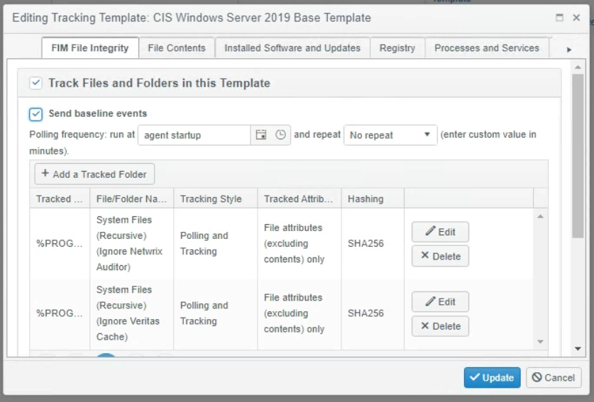
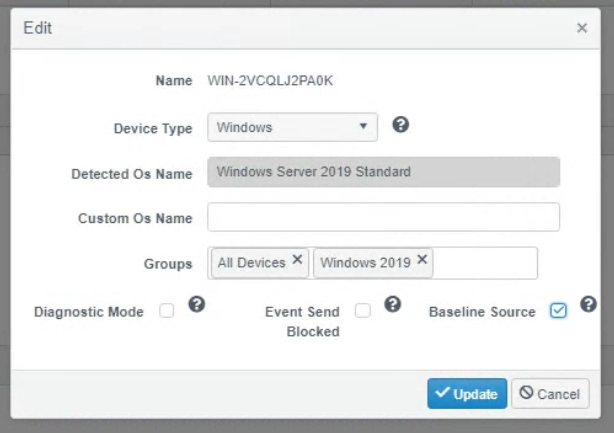

Question
How to retrieve the baseline events (both the list of files and their hashes) from an agent after it restarts?
Answer
Typically the agent performs a baseline/scan of the file system after the agent/server has been restarted. However, to retrieve the baseline events for a server in the Change Tracker dashboard, a couple of settings need to be enabled first. Follow the instruction below to configure Change Tracker for retrieving baseline events:
-
Select the template running against the device and click Edit.
-
In the Editing Tracking Templates dialog, go to the FIM File Integrity tab and enable the Send baseline events checkbox.
IMPORTANT: Enable this option for each of the different trackers depending on which baselines you wish to retrieve.

-
Navigate to Settings -> Agents & Devices.
-
Select the device and click Edit.

Once these options are enabled, baseline events will be sent the next time the agent/server is polled for this data.